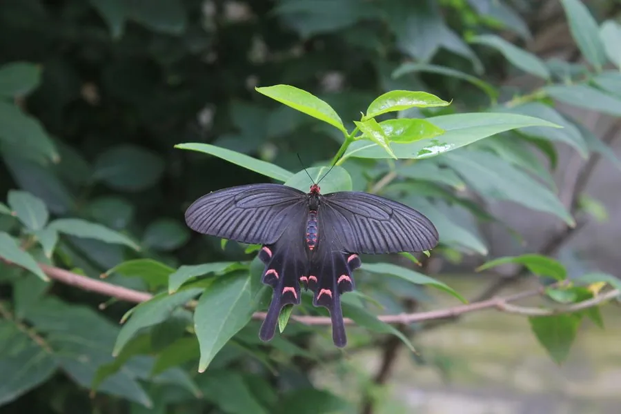

昆虫 · 动物界
灰绒麝凤蝶 Byasa mencius

翅黑褐、后翅缀粉红斑列并拖长尾突的凤蝶，体被灰色绒毛，幼虫取食马兜铃，栖息于中国中部山地。
- 分类
- 门节肢动物门纲昆虫纲目鳞翅目科凤蝶科属麝凤蝶属
- 栖息环境
- 海拔数百米至两千米的山地林缘、灌丛和溪谷旁
- 地理分布
- 中国中部与西南山地，包括四川、湖北、陕西、甘肃和云南北部
- 保护级别
- 尚无保护级别；寄主马兜铃的减少会影响其种群
物种志
灰绒麝凤蝶的翅展约九至十一厘米，翅面黑褐色，前翅色较均匀，后翅中部有一列粉红色至淡红色的新月形斑，斑列外侧还有若干小斑，后翅末端拖出一条细长的尾突。它的胸部与腹部密被灰白色绒毛，看上去像裹了一层灰绒，灰绒麝凤蝶之名由此而来。雌蝶体型略大，后翅的红斑更宽，尾突也稍长。
它分布于中国中部和西南的山地，包括四川、湖北、陕西、甘肃和云南北部，栖息在海拔数百米至两千米的山地林缘、灌丛和溪谷旁，成虫飞行缓慢，常在花丛间滑翔，喜访醉鱼草等花蜜。幼虫以马兜铃属植物为食，雌蝶把卵产在寄主的叶片或嫩茎上，幼虫取食叶片，化蛹于枝条上，一年发生一至两代，以蛹越冬。马兜铃属植物含有毒物质，幼虫取食后体内积累毒素，成虫因此对鸟类有威慑作用，目前尚无保护级别。
形态与习性
- 翅展约九至十一厘米，翅面黑褐
- 后翅有一列粉红色新月斑并拖长尾突
- 体表胸腹密被灰白色绒毛
- 食性幼虫取食马兜铃属植物叶片
- 毒性幼虫积累寄主毒素，成虫对鸟类有威慑
- 发生世代一年一至两代，以蛹越冬
趣味知识
- 它浑身裹着灰白色绒毛，飞起来像一团飘动的灰絮。
- 幼虫把马兜铃的毒素攒在体内，成虫因此让鸟类避而远之。
- 后翅那列粉红新月斑配上细长尾突，是麝凤蝶属最典型的装束。